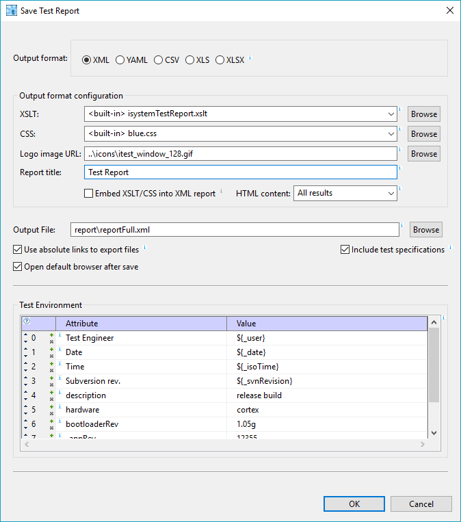
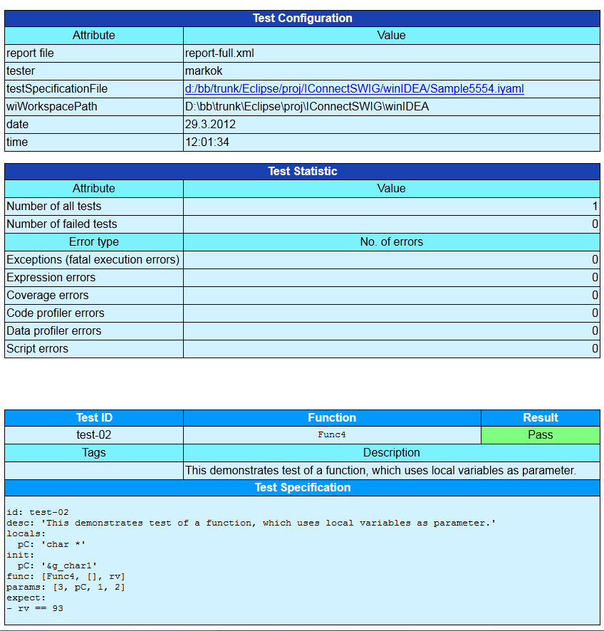

iSYSTEM testIDEA can save test results in XML, YAML, CSV, XLS, or XLSX file formats.
XML format is convenient for usage in other tools, including viewing in web browsers, because it is widely supported.
YAML format is not so well known, but it is much more readable and as such convenient for quick overview in text editor.
CSV (Comma Separated Values) format is also understood by many other tools, for example it can be imported to rquirements management tools, such as DOORS.
XLS and XLSX are Excel (old and new) formats.
If we want to view test results in web browser as HTML and print them, iSYSTEM testIDEA provides XML Style sheet templates. We can use one of the default templates, or create our own. If we would like to change colors only, they are stored in CSS file. More about template files can be found in section XSLT and CSS To save test results, select option Test | Save Test Report from the main menu. The Save Test Report dialog opens. Enter output file name and select one of built-in XSLTs. The dialog is shown below:
When we click OK, the report is saved and the default browser for XML files opens. Usually this is a web browser, which knows how to transform XML to HTML with appropriate XSLT. Internet Explorer and Firefox were tested with default XSLTs, while some versions of Chrome have a bug, which prevents opening of local XSLT files. Example report is shown below:
We've finished the first test now. Next sections describe iSYSTEM testIDEA functionality and usage in more detail.